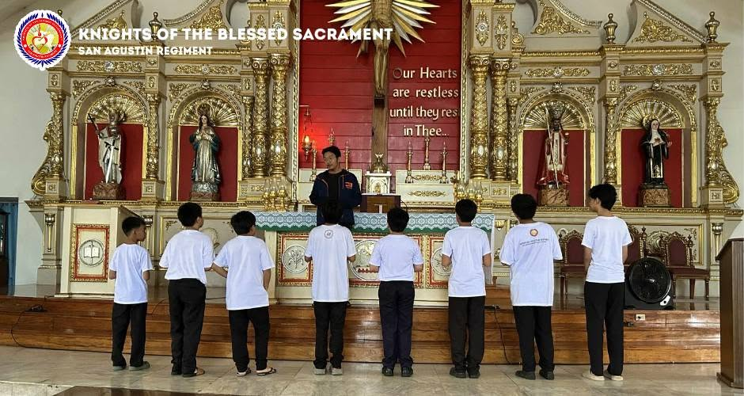

Our weekly youth meetings are held every Saturday morning, where we come together to grow in faith and build lasting friendships.
We start with inspirational sharing of the Gospel, reflecting on how God's Word applies to our daily lives as young parishioners.
After our spiritual discussion, we dive into high-energy team games and fun fellowship activities that keep everyone connected and engaged.
It is the perfect place to recharge your spirit, meet fellow youth members, and experience the joy of a supportive community.
Serving at the Holy Mass
Active service at the altar and in the parish is at the core of our ministry's commitment as Knights of the Blessed Sacrament.
Members actively serve during Saturday and Sunday Masses throughout the week, assisting the clergy and leading the congregation in worship.
Our regular serving schedule includes:
Saturday Anticipated Mass Service
Sunday Morning & Evening Mass Duties
Liturgical assistance during Special Feasts
Community hospitality and parish ushering
By serving at the Eucharistic celebration, we deepen our devotion to Christ in the Blessed Sacrament.
Practice Serving at the Altar

Altar Server Formation & Training
Rehearsal of Liturgical Postures & Reverence
Proper handling of Sacred Vessels & Altar Linens
Step-by-step Processional & Eucharistic Duties
Coordination during Solemn & Feast Day Masses
Teamwork and silent communication at the sanctuary
Training Guidelines:
Regular practice sessions ensure that every altar server performs their duties with confidence, grace, and deep reverence. Members gather before weekend services to walk through liturgical movements, refresh their knowledge of Mass responses, and support new recruits learning the ropes.